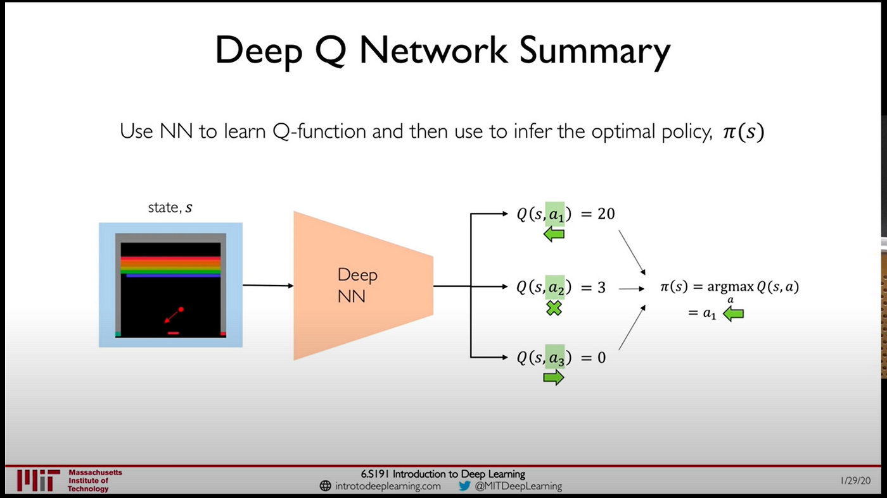
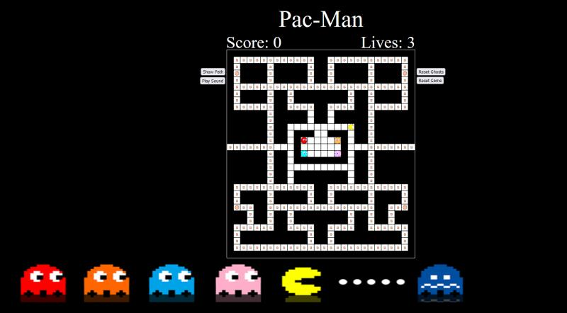
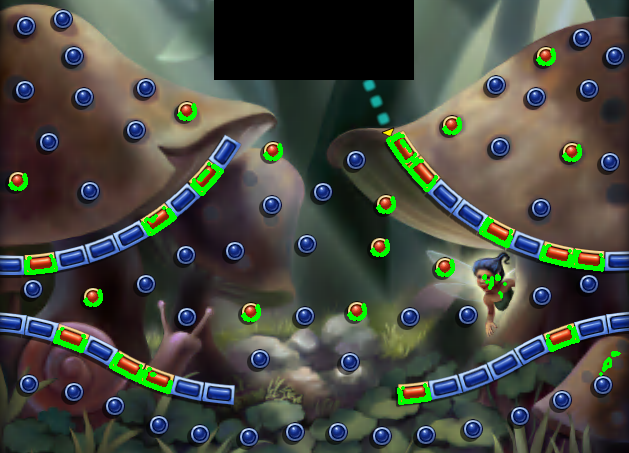
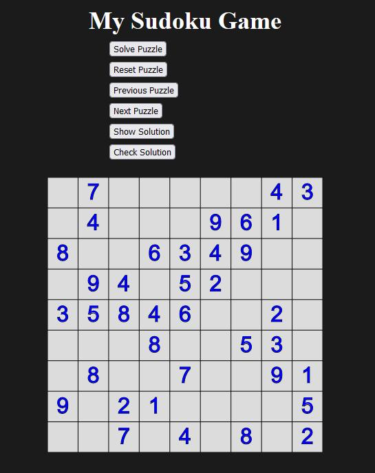
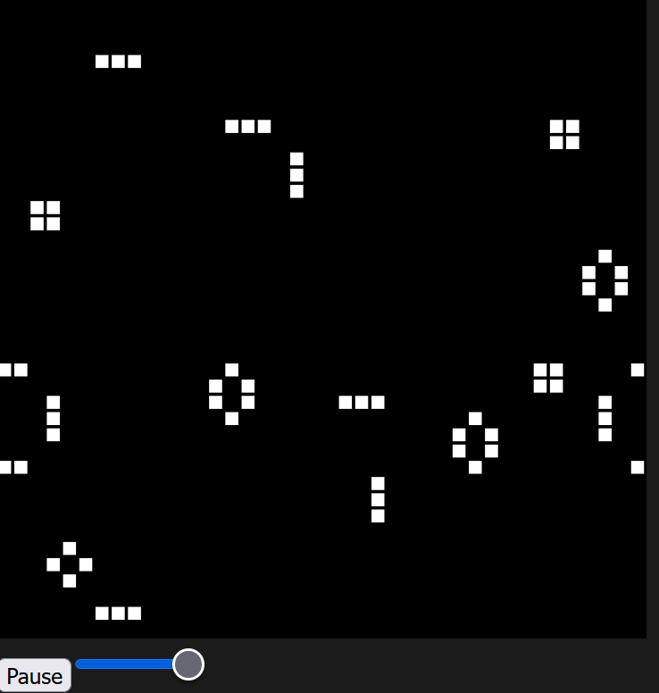
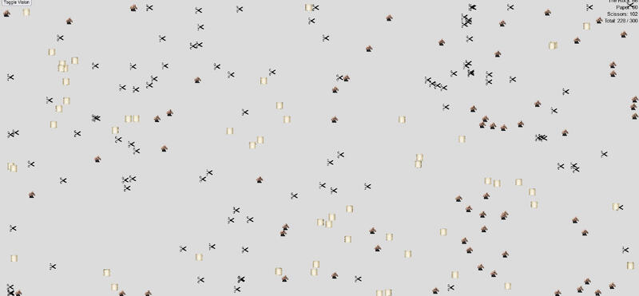

Breakout DDQN
A reinforcement-learning study comparing Double Deep Q-Network behavior on Atari Breakout, with emphasis on training efficiency and decision quality.
View on GitHub →Portfolio
Interactive systems, machine learning experiments, automation tools, and algorithmic playgrounds. I like projects where the underlying logic becomes something you can see, test, and interact with.

A reinforcement-learning study comparing Double Deep Q-Network behavior on Atari Breakout, with emphasis on training efficiency and decision quality.
View on GitHub →
A browser-based Pac-Man recreation with grid navigation, classic chase behavior, and A* pathfinding controlling ghost movement.
View on GitHub →
A desktop automation experiment using computer vision to inspect game state and control Peggle gameplay programmatically.
View on GitHub →
An interactive 9×9 Sudoku implementation with puzzle selection, validation, and hint tooling, built for the browser with p5.js.
View on GitHub →
An interactive cellular-automata sandbox where users can draw populations, erase cells, and adjust simulation speed to explore emergent behavior.
View on GitHub →
A visual ecosystem inspired by Rock-Paper-Scissors where moving entities interact, consume, reproduce, and change the balance of the simulation.
View on GitHub →More experiments
My GitHub also includes newer algorithm and browser experiments, including maze generation work. I keep the portfolio focused, but the repository list shows the broader trail of things I’ve been building.